Bitcoin Node & Mining Guide
Educational Resources for Pacific Island Communities
Understanding Proof-of-Work & Simple Mining Concepts
Overview
Learning About Bitcoin Mining in Pacific Islands
This educational guide explores the fundamentals of Bitcoin mining and node operation within the context of Pacific Island environments. We'll examine how Bitcoin's proof-of-work system functions, why mining is important for the network, and how Pacific Islanders can participate in this technology through simple, educational mining setups.
Rather than focusing on commercial mining operations, this guide provides knowledge and proof-of-concept examples that individuals and communities can use for learning and experimentation.
Bitcoin Mining Essentials
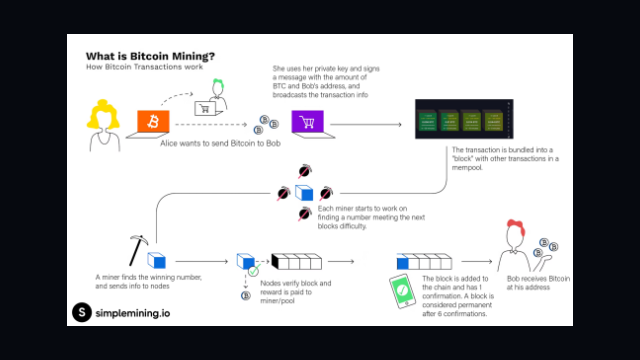What You'll Learn in This Guide
- Educational Approach: Understand mining concepts without institutional investment
- Timing Considerations: Why learning about mining is relevant now
- Simple Mining Statistics: Basic numbers and calculations for educational setups
- Practical Applications: How Pacific Islanders can benefit from this knowledge
This guide aims to demystify Bitcoin mining and make the concepts accessible to everyone, regardless of technical background or investment capacity.
Why Bitcoin Mining Matters
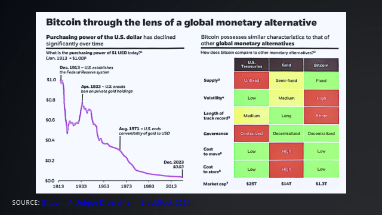Understanding the Role of Mining
Bitcoin mining serves multiple crucial functions in the Bitcoin network:
- Network Security: Miners provide computational power that secures the Bitcoin blockchain against attacks
- Transaction Processing: Mining allows new transactions to be confirmed and added to the blockchain
- New Bitcoin Issuance: The mining process is how new bitcoins are created and distributed
- Decentralization: Distributed mining helps keep the network free from central control
For Pacific Islanders, understanding mining creates opportunities for educational participation in a global financial network, regardless of traditional banking access.
Bitcoin's Long-Term Performance
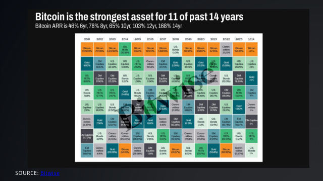Educational Context: Understanding Bitcoin's Value
When learning about Bitcoin mining, it's helpful to understand why people are interested in this technology:
- Historical Performance: Bitcoin has been the strongest performing asset for 11 of the last 14 years
- Comparison to Traditional Assets: The chart illustrates Bitcoin's returns compared to other investment classes
- Volatility and Risk: Understanding the trade-offs between potential returns and volatility
- Long-Term Perspective: The importance of educational knowledge regardless of short-term price movements
This historical context helps explain why learning about Bitcoin mining has educational value beyond immediate profitability considerations.
Bitcoin in the Global Asset Context
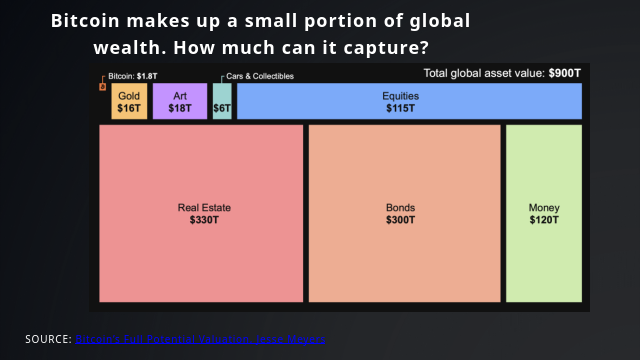Educational Perspective on Bitcoin's Market Position
To understand Bitcoin mining in context, it's helpful to see how Bitcoin compares to other global assets:
- Market Capitalization: How the total value of Bitcoin compares to other asset classes
- Digital Scarcity: Understanding Bitcoin's 21 million coin limit and its implications
- Adoption Curve: Learning about technology adoption patterns and current Bitcoin usage
- Global Accessibility: How mining contributes to Bitcoin's worldwide availability
This comparative context helps illustrate why learning about Bitcoin mining provides valuable insights into digital economics and emerging technologies.
Regulatory Developments
Global Regulatory Context for Bitcoin Mining
Regulatory environments for Bitcoin and mining activities vary significantly across regions:
- Regional Differences: How regulations differ between countries and regions
- Policy Evolution: Understanding how Bitcoin policies have evolved over time
- Compliance Considerations: Educational overview of regulatory compliance for small miners
- Pacific Island Context: Current regulatory status in Pacific Island nations
Understanding the regulatory landscape helps individuals make informed decisions when learning about mining technology, particularly in the unique context of Pacific Island nations.
Understanding Valuation Models
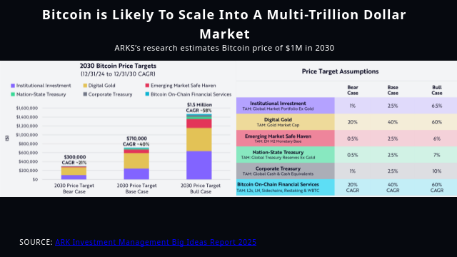Learning About Bitcoin Valuation Perspectives
When studying Bitcoin mining, it's helpful to understand different valuation approaches analysts use:
- Economic Models: How different analysts approach Bitcoin valuation
- Network Effects: Understanding Metcalfe's Law and its application to Bitcoin
- Stock-to-Flow Ratio: Examining scarcity as a value driver
- Critical Analysis: Learning to evaluate different predictions with healthy skepticism
This educational context helps learners develop critical thinking skills about digital asset valuation while understanding why mining participation continues to grow globally.
Note: This educational material does not constitute investment advice. Various prediction models shown are for educational purposes only.
Renewable Energy Potential
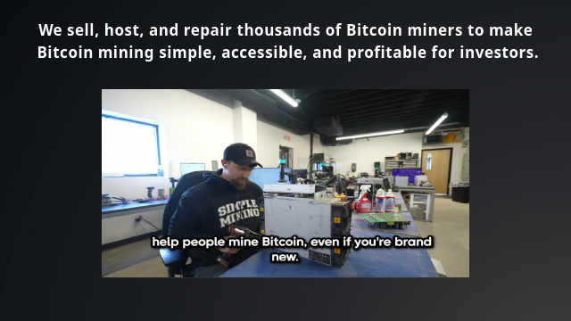Educational Exploration of Energy Resources
The Pacific Islands offer excellent opportunities to study the relationship between renewable energy and small-scale Bitcoin mining:
- Solar power: Even simple solar setups can power educational USB miners
- Measuring energy input vs. computational output ratio
- Understanding heat management in tropical climates
- Learning about off-grid electrical systems through practical application
These educational explorations help communities understand both blockchain technology and renewable energy principles simultaneously, creating multidisciplinary learning opportunities.
Proof-of-Concept: Simple Mining
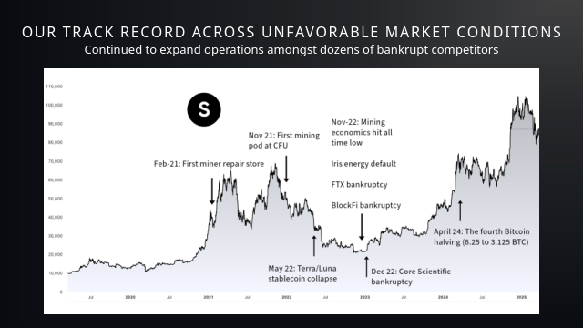Getting Started with Educational Mining
Simple mining setups provide hands-on learning about Bitcoin's proof-of-work system:
- USB Miners: Low-cost devices ideal for educational purposes (not profitable)
- Raspberry Pi Nodes: Learn to run a full Bitcoin node with minimal hardware
- Mining Pools vs. Solo Mining: Understanding different participation models
- Block Explorer Tools: Visualizing your contributions to the network
- Heat Management: Simple cooling solutions for small devices
These educational setups allow hands-on experimentation with blockchain technology without significant investment.
DIY Solar Mining Projects

Educational Solar-Powered Mining
Small proof-of-concept solar mining setups provide practical learning experiences:
- Solar Panel Basics: Understanding voltage, current, and power output
- Battery Systems: Learning about energy storage and discharge cycles
- Charge Controllers: Managing power flow between panels, batteries, and miners
- Energy Efficiency: Calculating hashrate per watt ratios
These DIY projects connect renewable energy education with blockchain technology, creating interdisciplinary learning opportunities for students and enthusiasts alike.
Understanding Mining Economics
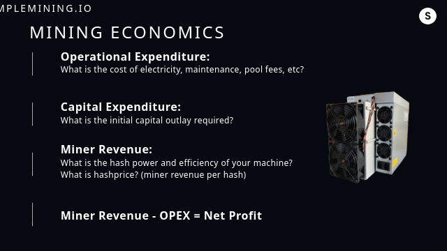Educational Overview of Mining Calculations
Learning about mining economics helps understand the educational value of a proof-of-concept setup:
- Financial Modeling: How to calculate potential mining outputs under different scenarios
- Cost Considerations: Understanding electricity costs, hardware depreciation, and maintenance
- Break-even Analysis: Learning how miners calculate profitability thresholds
- Pacific Island Considerations: Unique economic factors for regional miners (electricity costs, cooling needs)
These educational concepts help learners understand the mathematics and economics behind mining operations, providing valuable STEM learning opportunities.
Note: This educational material is for learning purposes only and does not constitute financial advice. Actual mining results vary based on numerous factors.
Price and Network Hashrate Relationship
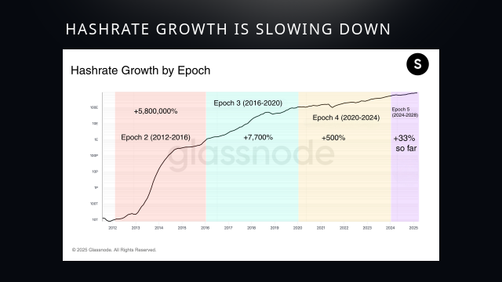Understanding Network Security Dynamics
A key educational concept in Bitcoin mining is the relationship between price and hashrate (network security):
- Network Security Mechanism: How hashrate follows price in a free market system
- Difficulty Adjustment: Learning how Bitcoin's algorithm automatically adjusts mining difficulty
- Miner Incentives: Understanding the economic feedback loop between profitability and participation
- Historical Patterns: Observing past cycles of price movement and resulting hashrate changes
This relationship demonstrates how Bitcoin's protocol creates a self-regulating system that maintains security through economic incentives - a fascinating study in digital economics.
Mining Cycles and Network Growth
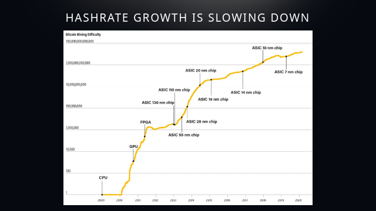Educational Look at Mining Industry Evolution
The Bitcoin mining industry follows distinct cycles that provide valuable lessons in digital economics:
- Mining Hardware Evolution: Understanding the progression from CPUs to specialized ASIC miners
- Network Growth Phases: How mining has evolved from hobbyists to industrial operations
- Geographic Distribution: The changing global landscape of mining operations
- Small-Scale Opportunities: Educational value in understanding mining regardless of scale
For Pacific Islanders, this historical context helps frame how even small educational mining operations connect to a global network with a fascinating technological evolution.
Running Your Own Bitcoin Node
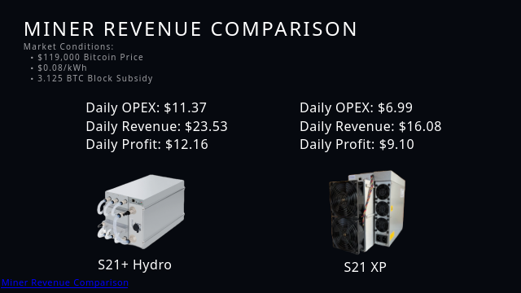Educational Guide to Node Operation
Setting up a Bitcoin node is an excellent educational project that contributes to network decentralization:
- Hardware Options: From Raspberry Pi to old laptops - repurpose existing equipment
- Bitcoin Core Setup: Step-by-step guide to installing and configuring the software
- Pruned vs. Full Nodes: Understanding different node types for limited storage
- Connectivity Solutions: Working with limited or intermittent internet access
- Node Monitoring: Tools to view your node's contributions to the network
Running a node helps you learn about network consensus while supporting Bitcoin's decentralization.
Understanding Mining Economics
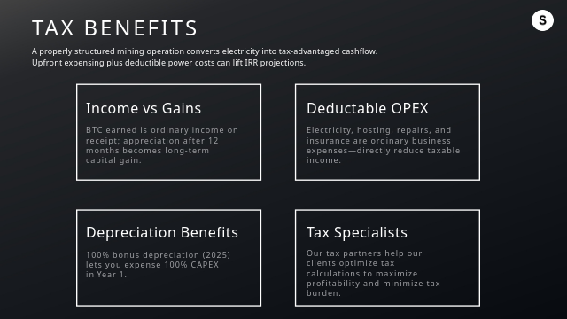Educational Perspective on Mining Costs & Rewards
Mining economics provides a practical framework for understanding several important concepts:
- Difficulty Adjustment: How Bitcoin automatically balances mining competition
- Block Reward Halving: The decreasing issuance schedule of new bitcoins
- Hash Rate Calculations: Measuring computational power and efficiency
- Break-Even Analysis: Understanding when educational mining might become sustainable
- Network Effects: How individual miners contribute to collective security
This knowledge helps students understand both the technical and economic aspects of proof-of-work systems, regardless of whether they mine profitably.
Mining Sensitivity Analysis
Educational Analysis of Mining Variables
Understanding sensitivity analysis provides valuable educational insights into mining economics:
- Variable Factors: How electricity costs, hardware efficiency, and Bitcoin price affect outcomes
- Scenario Modeling: Educational examples of different mining scenarios and their projected results
- Renewable Energy Impact: How sustainable energy can change the economic equation
- Pacific Island Considerations: Unique factors affecting small-scale educational mining in the region
These analytical concepts help learners develop critical thinking skills applicable beyond cryptocurrency mining, including renewable energy planning and cost-benefit analysis.
Note: Charts and models shown are for educational purposes only and represent hypothetical scenarios. Actual results will vary based on numerous factors.
Network Security Trends
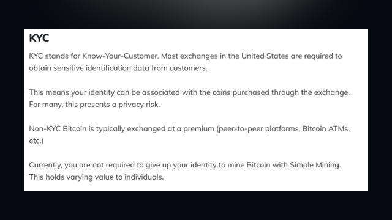Understanding Network Growth and Security
Bitcoin's network security has evolved significantly over time, providing educational insights into distributed systems:
- Hash Rate Growth: The increasing computational power securing the Bitcoin network
- Security Economics: How economic incentives drive network protection
- Mining Decentralization: The distribution of mining power across different participants
- Network Resilience: How Bitcoin maintains security despite external challenges
For Pacific Island communities, understanding these concepts provides valuable knowledge about resilient digital systems that can operate across geographical boundaries.
Geographical Distribution of Mining
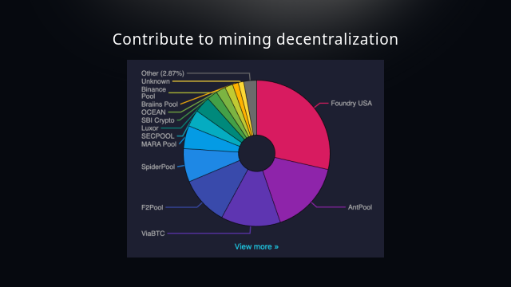Educational Overview of Global Mining Activity
The geographical distribution of Bitcoin mining has shifted significantly over time, offering valuable lessons:
- Global Participation: How mining has spread across different regions worldwide
- Energy Availability: The relationship between affordable energy and mining concentration
- Regulatory Impacts: How different regulatory environments affect mining distribution
- Pacific Opportunity: Potential for renewable energy mining in Pacific Island communities
Understanding these geographical patterns helps learners appreciate how Bitcoin's proof-of-work system creates a global marketplace for energy conversion, with potential opportunities for renewable-rich regions like the Pacific Islands.
© 2025 Pasifika Web3 Tech Hub | All Rights Reserved
Educational Resources for Bitcoin and Web3 Technology in the Pacific
This guide is for educational purposes only. Mining profitability varies with equipment, energy costs, and network difficulty.